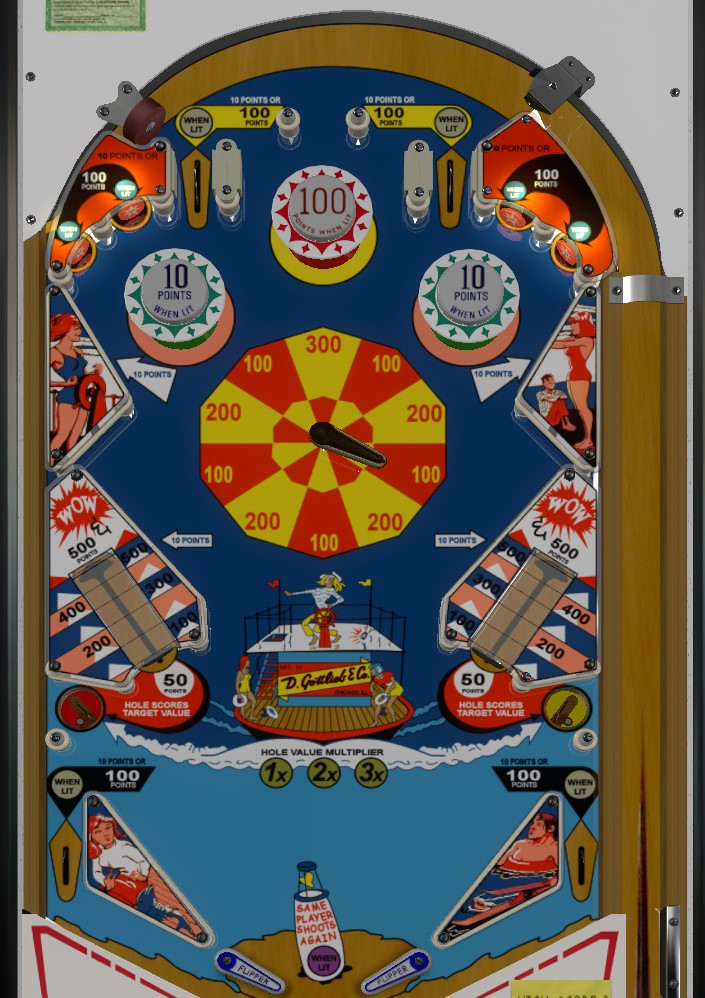

For small, safe points, shoot to the top of the table for 10 and 100 point bumpers, and for points by the 100s whenever the movable pointer flipper is moved into a different scoring zone. For riskier, big points, push a vary-target back as far as possible to increase the value; then shoot at the pointer flipper and move it repeatedly until the hole value is on 3x; then collect the vary-target value by shooting the lower saucer on the same side of the table as the pushed-back target.
Pushing back the vary-targets near the bottom of the table does not score points, but increases the hole value on that side of the table. Shoot a saucer to collect the value of the nearby vary-target. An unpushed target scores 50 points; as the target is pushed back more, it can be worth 100, 200, 300, or 400 points, or a fully-pushed vary-target scores 500 points and an extra ball. The point value of the target is multiplied by the hole multiplier, which can be 1x, 2x, or 3x, and changes any time the movable pointer flipper changes positions, every time a ball drains, or every time a lower saucer is made. Both vary-targets reset at the beginning of each ball; collecting a hole value resets that side's vary-target only. Maximum one extra ball per ball in play.
The pinball can collide with the black flipper near the top of the playfield, changing its position on the wheel. 10 wedges are highlighted on the wheel, worth between 100 and 300 points. Whenever the pointer is pushed into a new zone, points are earned equal to whatever number the flipper is pointing at, and the hole value multiplier is changed.
The following features are lit alternately:
Within each of these groups, one of the two features will be lit at any given time. Lit lanes and standup targets score 100 points, while unlit ones score 10 points; the red bumper also scores 10 points or 100 when lit, while the green bumpers score 1 point or 10 when lit. In the VPX virtual recreation, alternately lit features toggle every time the active player's score crosses a multiple of 100 points, but on physical copies of the table, alternately lit features toggle every time either upper slingshot or lower slingshot is activated (the "upper slingshots" being active slingshots on the top part of the vary-target structures).
There are no in lanes. Two-inch mini flippers are used. The flippers back up directly to the lower slingshots. Lower slingshots score 1 points. Out lanes score 10 points or 100 when lit and are lit alternately as described above.
There is no end-of-ball bonus. There are no playfield specials. Extra balls cannot be set to have a point value, to my knowledge. Tilt ends the current ball in play only.